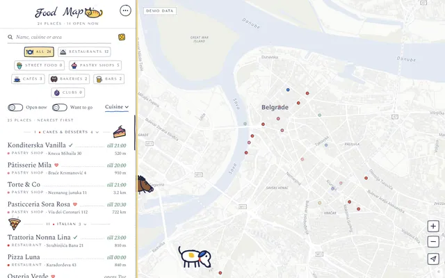
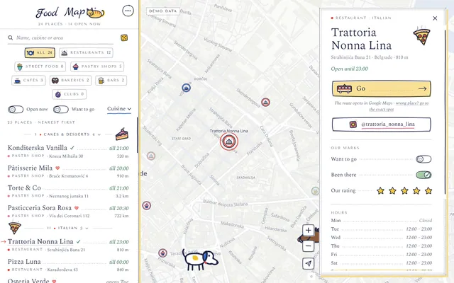
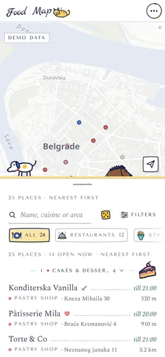
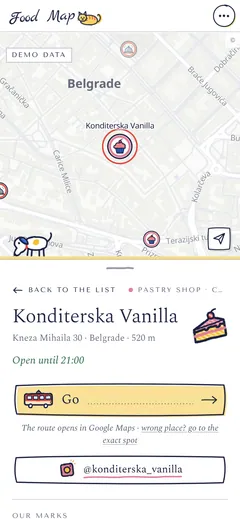
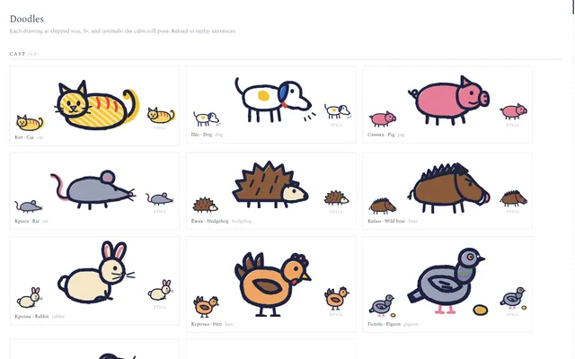

Food Map
A private, hand-drawn map of the food places you follow on Instagram, with opening hours
Shots
-

View larger1 Places grouped by cuisine next to the map, with open-until times and distance (sample data) -

View larger2 Place card: Go button, your own marks and rating, weekly hours (sample data) -

View larger3 On the phone: map on top, filters and the list in a sheet below (sample data) -

View larger4 A place on the phone, with its cuisine doodle and map pin (sample data) -

View larger5 The hand-drawn cast of animals that wander the app


Food Map turns the restaurants, pastry shops, cafés, bakeries and bars someone follows on Instagram into one private map with opening hours, grouped by cuisine, type, city or distance, so 'where do we go?' takes seconds. Places come from the official Instagram export or are shared straight from Instagram, are matched to OpenStreetMap, and doubtful matches go to a review list. Each place gets your own marks (want to go, been there, rating, tags, notes) and a Go button that opens directions in Google Maps. It is an installable PWA in Russian, English and Serbian, drawn in a doodled tasting-menu style with animated felt-pen animals and food.
Highlights
- Import from the Instagram follow list, matched to OpenStreetMap places, with a review list for doubtful matches
- 'Open now' evaluated in each place's own time zone; 'no hours' shown plainly instead of guessed
- Shared list for two owners plus read-only guests, enforced by Firestore security rules
- Runs entirely on free tiers: OpenStreetMap data, nightly refresh and backup jobs within a daily request budget
- Hand-drawn look: animated crayon animals and a food doodle per cuisine, pausable and light on slow phones
- Period
- NOV 2026
- Status
- working
- Kind
- app
- Stack
- Next.js 16
- React 19
- TypeScript
- Tailwind CSS v4
- MapLibre GL
- OpenStreetMap (Overpass, Nominatim)
- Firebase Auth
- Cloud Firestore
- next-intl
- Vercel (cron, Blob)
- Vitest